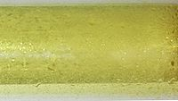

Numero atomico: 17
Massa atomica: 35,45
Temperatura di fusione (°C): -101
Temperatura di ebolizione (°C): -35
Energia di prima ionizzazione (kj/mol): 1251
Elettronegatività (secondo Pauling): 3,16
Densità: 3,21
Numeri di ossidazione: ±1+3+5+7
Configurazione elettronica: 1s2, 2s2, 2p6, 3s2, 3p5
Maggiori Informazioni